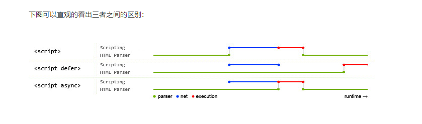

前端知识点多且杂，不能一味的盲人摸象，系统梳理是必须的，融会贯通后才能突破瓶颈。（20200420）
Html/Css
HTML5 是什么？
互联网的下一代标准，，是 html5 标准网页声明。
href 和 src
href（hyperReference）：既超文本引用：当浏览器遇到 href 时，会并行的地下载资源，不会阻塞页面解析，例如我们使用引入 CSS，浏览器会并行地下载 CSS 而不阻塞页面解析. 因此我们在引入 CSS 时建议使用而不是@import
src（resource）：即资源，当浏览器遇到 src 时，会暂停页面解析，直到该资源下载或执行完毕，这也是 script 标签之所以放底部的原因
defer 和 async
 1.都是异步加载
2.async 加载完成立即执行，defer 的执行需要等到文档所有元素解析完成之后，DOMContentLoaded 事件触发执行之前。 3.所以 async 顺序不能保证，defer 可以。
并行加载，串行解析
伪元素/伪类：一个是 dom 中存在的元素（before），一个是附加在元素上才能实现的的类（hover）
BFC/IFC
Block Formatting Context 即块级格式上下文，简单的说，BFC 是页面上的一个隔离的独立容器，不受外界干扰或干扰外界。
条件：
float不为 none
overflow的值不为 visible
position 为 absolute 或 fixed
display的值为 inline-block 或 table-cell 或 table-caption 或 grid
常见布局
两列自适应布局
1.float+overflow:hidden/position
如普通的两列布局，浮动+普通元素的 margin 便可以实现，
但如果是自适应的两列布局，利用 float+overflow:hidden 便可以实现，
这种办法主要通过 overflow 触发 BFC,而 BFC 不会重叠浮动元素。
由于设置 overflow:hidden 并不会触发 IE6-浏览器的 haslayout 属性，所以需要设置 zoom:1 来兼容 IE6-浏览器。
2.flex
3.grid
圣杯布局/双飞翼布局
1.左右 float，中间 margin-left/margin-right,父元素清除浮动/position
2.margin
.left{
width: 200px;
margin-left:-100%
}
.center{
float: left;
width: 100%;
}
.right{
float: left;
margin-left: -200px;
}
3.flex(一维)
4.grid(二维)
(flex:1 真好用)
Js
基础
解释阶段：
词法/语法分析:
外部环境的引用（outer Lexical Environment）：指它可以访问其父级词法环境（即作用域）。
环境记录器 （Environment Record）：存储变量和函数声明的实际位置。（声明式环境记录器，对象式环境记录器是两个比较主要环境记录器）
词法环境中含有外部词法环境的引用，我们可以通过这个引用获取外部词法环境的变量、声明等，
这些引用串联起来一直指向全局的词法环境，因此形成了**作用域链。
词法环境中含有外部词法环境的引用，我们可以通过这个引用获取外部词法环境的变量、声明等，因此形成了闭包**。
执行阶段：
创建执行上下文(运行时确定，可改变): 1.处理函数声明 2.处理变量声明
(变量名称跟已经声明的形式参数或函数相同，则不会干扰已经存在的这类属性)
执行函数代码
垃圾回收
只有声明本身会被提升，而赋值操作不会被提升。
变量会提升到其所在函数的最上面，不是整个程序的最上面。
函数声明会被提升，但函数表达式不会被提升。
上下文和作用域
每个函数调用都有与之相关的作用域和上下文。从根本上说，范围是基于函数(function-based)而上下文是基于对象(object-based)。
作用域是和每次函数调用时变量的访问有关，并且每次调用都是独立的。
上下文总是关键字 this 的值，是调用当前可执行代码的对象的引用。
作用域是函数定义的时候就确定好的了，函数当中的变量是和函数所处的作用域有关，函数运行的作用域也是与该函数定义时的作用域有关。
而上下文，主要是关键字 this 的值，这个是由函数运行时决定的，简单来说就是谁调用此函数，this 就指向谁。
作用域只是一个“地盘”，其中没有变量。变量是通过作用域对应的执行上下文环境中的变量对象来实现的。所以作用域是静态观念的，而执行上下文环境是动态上的，两者并不一样。有闭包存在时，一个作用域存在两个上下文环境也是有的。也就是说，作用域只是用于划分你在这个作用域里面定义的变量的有效范围，出了这个作用域就无效
同一个作用域下，对同一个函数的不同的调用会产生不同的执行上下文环境，继而产生不同的变量的值，所以，作用域中变量的值是在执行过程中确定的，而作用域是在函数创建时就确定的。如果要查找一个作用域下某个变量的值，就需要找到这个作用域对应的执行上下文环境，再在其中找到变量的值。
实例：函数柯里化 + 隐式转换
function currying(fn){
var allArgs = [];
function next(){
var args = [].slice.call(arguments);
allArgs = allArgs.concat(args);
return next;
}
// 字符类型
next.toString = function(){
return fn.apply(null, allArgs);
};
// 数值类型
next.valueOf = function(){
return fn.apply(null, allArgs);
}
return next;
}
var add = currying(function(){
var sum = 0;
for(var i = 0; i < arguments.length; i++){
sum += arguments[i];
}
return sum;
});
alert( add(10)(20)(50) ) // 80
EVENT LOOP
tasks
microtasks
浏览器渲染
API
Array.prototype.flat() 递归平铺数组
Object.defineProperty(对象名，属性名，描述符)
addEventListener(type, listener，[{capture: Boolean, bubbling: Boolean, once: Boolean}]);
capture: 捕获时机;
bubbling: 是否不调用 preventDefault()，改善滚屏性能;
once: 是否只执行一次;
递归思想很重要!
实例：纯字符串比较大小,先转成 ascii 码
alert("a"<"b"); //true
alert("abc"<"aad"); //false,多纯字母比较，会依次比较ascii码
构造函数
function func(name){}等价于 var func = function (name){}
proto
是一个对象指向另一个对象，也就是他的原型对象，我们也可以理解为父类对象。
它的作用就是当你在访问一个对象属性的时候，如果该对象内部不存在这个属性，那么就回去它的proto属性所指向的对象（父类对象）上查找，
如果父类对象依旧不存在这个属性，那么就回去其父类的proto属性所指向的父类的父类上去查找。以此类推，直到找到 null。
这个查找的过程，也就构成了我们常说的原型链。（浏览器历史遗留）
prototype：给其它对象提供共享属性的对象。
当你创建函数时，JS 会为这个函数自动添加 prototype 属性，值是一个有 constructor 属性的对象，不是空对象。
而一旦你把这个函数当作构造函数（constructor）调用（即通过 new 关键字调用），
那么 JS 就会帮你创建该构造函数的实例，实例继承构造函数 prototype 的所有属性和方法（实例通过设置自己的proto指向承构造函数的 prototype 来实现这种继承）。
constructor：一个对象指向一个函数，这个函数就是该对象的构造函数。
每个函数在创建的时候，JavaScript 会同时创建一个该函数对应的 prototype 对象，
而函数创建的对象.proto === 该函数.prototype，
该函数.prototype.constructor===该函数本身，
故通过函数创建的对象即使自己没有 constructor 属性，它也能通过proto找到对应的 constructor，
所以任何对象最终都可以找到其对应的构造函数。
特殊: 原型的老祖宗 Function，它是它自己的构造函数，所以 Function.prototype === Function.__proto(只可以这样理解，底层原理不一定是这样)
作用域
判断对象类型
typeof、instanceof/constructor、Object.prototype.toString.call()
闭包:通过背包的类比,当一个函数被创建并传递或从另一个函数返回时，它会携带一个背包,背包中是函数声明时作用域内的所有变量 1.能够读取其他函数内部变量的函数（也就是读取自身函数以外的变量） 2.让这些外部变量始终保存在内存中 3.闭包的外部作用域是在其定义的时候已决定，而不是执行的时候
箭头函数：箭头函数的 this 指向离它最近的父级作用域。
什么时候不使用箭头函数？ 1.定义对象上的方法 2.动态上下文的回调函数 3.调用构造函数
React
生命周期（旧）
挂载阶段
constructor：避免将 props 的值复制给 state
componentWillMount
render：react 最重要的步骤，创建虚拟 dom，进行 diff 算法，更新 dom 树都在此进行
componentDidMount
组件更新阶段
componentWillReceiveProps
shouldComponentUpdate 是否更新
componentWillUpdate
render
componentDidUpdate
卸载阶段
componentWillUnMount
生命周期（新）
挂载阶段
constructor
static getDerivedStateFromProps
render
componentDidMount
更新阶段
static getDerivedStateFromProps
shouldComponentUpdate
render
getSnapshotBeforeUpdate
componentDidUpdate
卸载阶段
componentWillUnmount
错误处理
static getDerivedStateFromError 从错误中获取 state，componentDidCatch 捕获错误并进行处理
setState
合成事件
mixin、HOC、Render Props
React Hooks
优点：
函数友好，解决了类组件的几大问题:
1.this 指向容易错误 2.分割在不同声明周期中的逻辑使得代码难以理解和维护 3.代码复用成本高（高阶组件容易使代码量剧增）
简洁、解耦、组合
缺点：
额外的学习成本（Functional Component 与 Class Component 之间的困惑）
写法上有限制（不能出现在条件、循环中），并且写法限制增加了重构成本
破坏了 PureComponent、React.memo 浅比较的性能优化效果（为了取最新的 props 和 state，每次 render()都要重新创建事件处函数）
在闭包场景可能会引用到旧的 state、props 值
内部实现上不直观（依赖一份可变的全局状态，不再那么“纯”）
React.memo 并不能完全替代 shouldComponentUpdate（因为拿不到 state change，只针对 props change）
React Fiber
一种基于浏览器的单线程调度算法
React 16 之前 ，reconcilation 算法实际上是递归，想要中断递归是很困难的，React 16 开始使用了循环来代替之前的递归.
Fiber：一种将 recocilation （递归 diff），拆分成无数个小任务的算法；它随时能够停止，恢复。停止恢复的时机取决于当前的一帧（16ms）内，还有没有足够的时间允许计算。
function fiber(剩余时间) {
if (剩余时间 > 任务所需时间) {
做任务
} else {
requestIdleCallback(fiber)
// requestIdleCallback 是浏览器提供的一个 api，可以让浏览器在空闲的时候执行回调，
// 在回调参数中可以获取到当前帧剩余的时间，fiber 利用了这个参数，
// 判断当前剩下的时间是否足够继续执行任务，
// 如果足够则继续执行，否则暂停任务，
// 并调用 requestIdleCallback 通知浏览器空闲的时候继续执行当前的任务
}
}
Diff 算法
三个假设
1.web ui 中 Dom 节点跨层级的移动操作很少,diff 算法比较新旧节点的时候，比较只会在同层级比较，不会跨层级比较。 2.拥有相同类的两个组件将会生成相似的树形结构，拥有不同类的两个组件将会生成不同的树形结构。 3.对于同一层级的一组子节点，他们可以通过唯一 key 进行区分。
四个步骤 1.用 JS 对象模拟 DOM（虚拟 DOM） 2.把此虚拟 DOM 转成真实 DOM 并插入页面中（render） 3.如果有事件发生修改了虚拟 DOM，比较两棵虚拟 DOM 树的差异，得到差异对象（diff） 4.把差异对象应用到真正的 DOM 树上（patch）
建议，在开发组件时，保持稳定的 DOM 结构会有助于性能的提升； 建议，在开发过程中，尽量减少类似将最后一个节点移动到列表首部的操作
React Router
哈希| history | creatememoryhistory(无 dom 环境，node/RN）
Time Slice
Vue/Ng
双向绑定：发布订阅模式、脏检查、数据劫持+发布订阅(vue)
Flutter
前端工程化
babel 处理 Js, webpack 打包, uglifyJs 压缩
打包:
tree-shaking（大部分类库无效）
CommonJS: 引入整个文件，ES6 可部分引用，效率较高。
CommonJS: 模块输出的是一个值的拷贝，ES6 模块输出的是值的引用。
CommonJS: 模块是运行时加载，ES6 模块是编译时输出接口(静态加载)。
计算机基础
网络分层的由来：通过协议实现计算机通信，再将协议分层，每一层负责一项具体的工作，然后把数据传送到下一层，将复杂的来往通信简单化。

运输层
UDP:不可靠，实时(即时会议)，速度较快
TCP:可靠(文件传输)，流协议
TCP 协议特点
面向连接：面向连接，是指发送数据之前必须在两端建立连接，建立连接的方法就是 三次握手，这样能建立可靠的连接，为数据的可靠传输打下了基础
仅支持单播传输：每条 TCP 传输连接只能有两个端点，只能进行点对点的数据传输，不支持多播和广播传输方式
面向字节流：TCP 不像 UDP 一样那样一个个报文独立传输，而是在不保留报文边界的情况下以字节流方式进行传输
可靠传输：对于可靠传输，判断丢包，误码靠的是 TCP 的段编号以及确认号，TCP 为了保证报文传输的可靠，就给每个包一个序号，同时序号也保证了传送到接收端实体的包的按序接收
然后接收端实体对已成功收到的字节发回一个相应的确认(ACK)，如果发送端实体在合理的往返时延(RTT)内未收到确认，那么对应的数据（假设丢失了）将会被重传
提供拥塞控制：当网络出现拥塞的时候，TCP 能够减小向网络注入数据的速率和数量，缓解拥塞
TCP 提供全双工通信：TCP 允许通信双方的应用程序在任何时候都能发送数据，因为 TCP 连接的两端都设有缓存，用来临时存放双向通信的数据
当然，TCP 可以立即发送一个数据段，也可以缓存一段时间以便一次发送更多的数据段（最大的数据段大小取决于 MSS）
三次握手：
第一次握手 客户端向服务端发送连接请求报文段，该报文段中包含自身的数据通讯初始序号，请求发送后，客户端便进入 SYN-SENT 状态
第二次握手 服务端收到连接请求报文段后，如果同意连接，则会发送一个应答，该应答中也会包含自身的数据通讯初始序号，发送完成后便进入 SYN-RECEIVED 状态
第三次握手 当客户端收到连接同意的应答后，还要向服务端发送一个确认报文，客户端发完这个报文段后便进入 ESTABLISHED 状态，服务端收到这个应答后也进入 ESTABLISHED 状态，此时连接建立成功
四次挥手：
第一次挥手 若客户端 A 认为数据发送完成，则它需要向服务端 B 发送连接释放请求
第二次挥手 B 收到连接释放请求后，会告诉应用层要释放 TCP 链接，然后会发送 ACK 包，并进入 CLOSE_WAIT 状态，此时表明 A 到 B 的连接已经释放，不再接收 A 发的数据了，但是因为 TCP 连接是双向的，所以 B 仍旧可以发送数据给 A
第三次挥手 B 如果此时还有没发完的数据会继续发送，完毕后会向 A 发送连接释放请求，然后 B 便进入 LAST-ACK 状态
第四次挥手 A 收到释放请求后，向 B 发送确认应答，此时 A 进入 TIME-WAIT 状态，该状态会持续 2MSL（最大段生存期，指报文段在网络中生存的时间，超时会被抛弃）时间，若该时间段内没有 B 的重发请求的话，就进入 CLOSED 状态，当 B 收到确认应答后，也便进入 CLOSED 状态
DNS
www：万维网
fdp：文件传输
mail：邮件
优化：TTL 切换备份 负载均衡
安全性
跨站脚本攻击（Cross-site scripting,简称 XSS）：代码注入
跨站请求伪造（Cross-site request forgery，简称 CSRF）：伪装来自受信任用户的请求
sql 注入
设计模式、数据结构、算法
设计模式
1.单一原则 2.开闭原则
算法
冒泡 / 快排 – 排序类算法
LRU / 排列组合 – 应用类算法
链表 / 堆 / 栈 / 树 / 图 – 数据结构类算法
分治 / 动规 – 算法思想
深度优先 / 广度优先
浏览器
页面加载优化
1.使用动态 import，切分页面代码，减小首屏 JS 体积； 2.对版本、基础框架等进行缓存，本地缓存； 3.使用 SplitChunksPlugin 拆分公共代码； 4.在 HTML 内实现 Loading 态或者骨架屏；
5.css、js 代码优化
8.使用动态 polyfill； 5.使用 SplitChunksPlugin 拆分公共代码； 6.正确地使用 Webpack4.0 的 Tree Shaking； 8.编译到 ES2015+，提高代码运行效率，减小体积； 9.使用 lazyload 和 placeholder 提升加载体验；
…
API
window.performance.timing:获取页面渲染所相关的数据
操作
控制台使用快捷键 Ctrl + Shift + P，输入 full，回车，截取当前整个网页
原理
多进程
Browser 进程：浏览器的主进程，唯一，负责创建和销毁其它进程、网络资源的下载与管理、浏览器界面的展示、前进后退等。
GPU 进程：用于 3D 绘制等，最多一个。
第三方插件进程：每种类型的插件对应一个进程，仅当使用该插件时才创建。
浏览器渲染进程（浏览器内核）：内部是多线程的，每打开一个新网页就会创建一个进程，主要用于页面渲染，脚本执行，事件处理等。
渲染进程：GUI 渲染线程、JavaScript 引擎线程（v8 引擎）、事件触发线程、定时触发器线程、异步 http 请求线程。
GUI 渲染线程与 JavaScript 引擎线程互斥。
Git
删除本地分支： git branch -d dev20181018
如果删除不了可以强制删除，git branch -D dev20181018
删除远程分支：git push origin --delete dev20181018
git fetch -p origin 清除本地缓存，用于远程分支已删除，本地显示还存在
使用命令 git remote show origin，可以查看 remote 地址，远程分支，还有本地分支与之相对应关系等信息。
远程分支覆盖本地
git fetch --all
git reset --hard origin/master (这里 master 要修改为对应的分支名)
git pull
npm
常用命令
1.npm install 本地安装
（1）将安装包放在 ./node_modules 下（运行 npm 命令时所在的目录），如果没有 node_modules 目录，会在当前执行 npm 命令的目录下生成 node_modules 目录。
（2）可以通过 require() 来引入本地安装的包。
2.npm install -g 全局安装
(1) 将安装包放在 /usr/local 下或者你 node 的安装目录。
3.npm install --save
(1)会把包安装到 node_modules 目录中
(2)会在 package.json 的 dependencies 属性下添加
(3)之后运行 npm install 命令时，会自动安装包到 node_modules 目录中
(4)之后运行 npm install --production 或者注明 NODE_ENV 变量值为 production 时，会自动安装包到 node_modules 目录中
4.npm install --save-dev
(1)会把包安装到 node_modules 目录中
(2)会在 package.json 的 devDependencies 属性下添加包
(3)之后运行 npm install 命令时，会自动安装包到 node_modules 目录中
(4)之后运行 npm install --production 或者注明 NODE_ENV 变量值为 production 时，不会自动安装包到 node_modules 目录中
npm 包
1.npm install -g npm-check-updates
检查 package.json 中 dependencies 的最新版本：
ncu
更新 dependencies 到新版本：
ncu -u
更新全部到最新版本：
npm install
2.nrm 切换 npm 源
提高效率
1.不主动引入组件，编辑器自动引入 2.快速生成模板 rcc + tab （https://blog.csdn.net/weixin_43606158/article/details90900061）
3.Mac 为何 F*系列组合快捷键无效？ Fn + F6 + shift = 重命名
业务经验
Learn
数据结构与算法 Javascript 描述
js 语言精粹
js 模式
HTTP 权威指南 pre
数据结构、计算机原理、基本算法
AFIED
mysql ing
dash
axure
brew
iterm
i5ting
markMan
charls ed
常见问题
函数式编程：
纯函数：不依赖外界状态，没有副作用
深浅拷贝（深拷贝循环引用问题，使用哈希表储存每个对象后对比处理）
闭包
http 缓存
协商缓存：
ETag/If-Not-Match(精确判断资源是否被修改)、Last-Modified/If-Modified-Since(只管修改不论内容是否改变)
模拟 promise.allSettled(ES2020) 1.自己计数 2.修改数组中 promise 均为成功
从输入 url 到页面加载发生了什么？
1.DNS 解析 2.TCP 连接 3.发送 HTTP 请求 4.服务器处理请求并返回 HTTP 报文 5.浏览器解析渲染页面 6.连接结束
200 成功,
204 服务器成功处理了请求，但不需要返回任何实体内容,
301 资源已永久移动到新位置,
302 资源临时从不同的 URI 响应请求,
304 缓存重定向,
400 请求语义参数问题,
401 验证用户,···
403 服务器拒绝,
404 找不到资源地址,
422 格式正确语义错误,
500 服务器端代码问题
501 服务器端无法识别请求方法
502 网关代理服务失败
503 过载
504 超时
ccs 动画为什么比 js 效率高？
第一点
从实现动画的复杂度来看，CSS 动画大多数都是补间动画，而 JS 动画是逐帧动画。当然这里我们不谈论实现的效果
第二点
编码的高效，采用 JS 去实现的动画，无论多简单的动画，都需要去控制整个过程，当然你可能会说可以采用一些库来解决这些问题，但是这些库的实际运行可能要比原生实现的效率要低的多
第三点
性能的高效，在我们前面讲到了回流和重绘，如果我们要操作一个元素向右移动，我们可能需要控制 dom.style.left 属性，每次来改变元素的位置，而结合我们所说的，几何属性的改变必然会引起回流，回流必然引起重绘，可想而知如果我们采用 JS 来实现动画，这个代价有多大，这会造成浏览器在不断的计算页面，从而导致浏览器内存堆积。同时由于 JavaScript 运行在浏览器的主线程中，主线程中还有其他的重要任务在运行，因而可能会受到干扰导致线程阻塞，从而丢帧
而 CSS 的动画是运行在合成线程中的，不会阻塞主线程，并且在合成线程中完成的动作不会触发回流和重绘
当然还有一个重要的点：JS 动画运行在 CPU，而 CSS 动画运行在 GPU